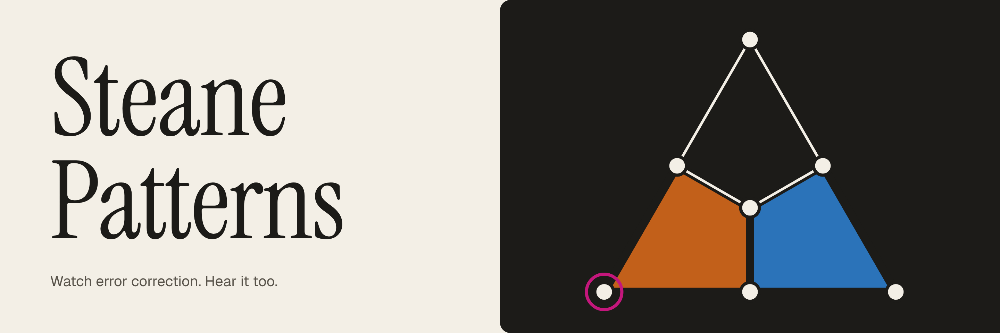

Twelve short chapters
How these simulations work
From a single bit flip to Relay-BP: what the grid, the triangles, the rings and the sounds mean, one idea at a time. Each chapter takes five to eight minutes and ends with something to try in the simulator.
Part 1 · The code
Part 2 · Time and noise
Part 3 · Decoding
Part 4 · Reading results
Appendix